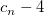
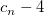
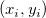
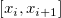

関連する動画はこちら:Origin VT-0010 Interpolation
関連する動画はこちら:Origin VT-0010 Interpolation
 関連する動画はこちら:Origin VT-0010 Interpolation
関連する動画はこちら:Origin VT-0010 Interpolation
補間は、既知の離散データから新しいデータポイントを計算し、作成する方法です。Xベクトルデータを与えると、この機能は入力曲線(XY範囲)を元にYベクトルデータを補間します。Originには、データ補間のために次の4つの手法が用意されています。線形、3次スプライン、3次B-スプライン、Akimaスプライン
線形補間 は、最も単純で高速な補間法です。線形補間では、2つの隣接するデータポイントの算術平均が計算されます。この方法は、精度が低くても構わない場合に役立ちます。また線形補間は、計算に時間がかからないので、大きなデータセットの場合にも役立ちます。
線形補間の一般形は、多項式補間です。多項式補間は、線形補間よりも多くの計算パワーが必要で、多項式の次数が高いとフィットデータの振れも広がります。これらのデメリットは、多項式フィットやスプライン補間を使って避けることができます。
3次スプライン法は3次多項式を使用し、区分法の要領でデータフィットを実行します。スプライン補間は線形補間よりも誤差が少なくなり、補間曲線も滑らかになります。
3次スプライン同様、3次B-スプライン補間もデータ範囲を区分けしてデータフィットしますが、これは3次ベジェスプラインを使って、データを近似します。3次B-スプラインは、幾何学の汎用的な正確なモデルとなります。
interp1 Xファンクションが呼び出されて計算を実行します。
Note：均一で等間隔な補間曲線を生成するには、補間/補外のメニューコマンドを使用します。
| 再計算 |
分析結果の再計算の設定を変更します。
詳細情報は、 分析結果の再計算をご覧下さい。 |
|---|---|
| 補間するX値 |
補間を行うX列 |
| 入力 |
指定されたX列からYを補間するための参照XY列。複数のXY列を選択できます。複数のXYが選択されている場合、XYの各セットが同じX列を補間するための参照として使用され、対応するY列と係数値が出力されます。 範囲の設定に関する詳細は、入力データを指定するをご覧ください。 |
| 手法 |
補間手法を指定します。
|
| 補外オプション |
補間するX値 で指定されたデータ範囲の一部が、入力で指定されたX範囲の外側にあるとき、これらの結果のY値は補外から計算されるため、この範囲部分は補外範囲として考慮されます。このオプションは、対応するY値をどのように補外するか指定するために使用します。
|
| 境界 |
境界条件は3次スプラインでのみ利用できます。
|
| スムージング因子 |
スムージング因子は3次B-スプラインでのみ利用できます。 |
| 補間の結果 |
補間されたY値を出力するY列。 |
| 係数 |
スプラインまたはBスプライン法を使うときのスプライン係数を出力するかどうか、およびそれらをどの列に表示するか。 |
異なる対の数列データ ( と
と )が与えられています。ここで
)が与えられています。ここで です。次の方法で、
です。次の方法で、 での補間した
での補間した を探します。
を探します。
1. 線形補間 (interp1q)
この場合、") となります。
となります。
この場合、") となります。
となります。
この場合、となります。
2. 3次スプライン (spline)
Originは、自然3次スプラインを用いて補間します。

ここで、
そして、 が次から生成されます。
が次から生成されます。

境界点において、 とを0にセットします。
とを0にセットします。
3. 3次B-スプライン (bspline)
 または
または に対して線形補間を実行します。
に対して線形補間を実行します。
この場合、") となります。
となります。
ここで、\!") は、結節点 ,
は、結節点 ,  , ...,
, ...,  , で定義される規格化した3次Bスプラインを表し、
, で定義される規格化した3次Bスプラインを表し、  は、対応する関数の係数を表します。
は、対応する関数の係数を表します。
この結節点の合計数 と
と  , ...,
, ...,  は、関数によって自動的に選ばれます。結節点
は、関数によって自動的に選ばれます。結節点  , ...,
, ...,  は、内部の結節点です。これらは近似区間 [,
は、内部の結節点です。これらは近似区間 [,  ] を個のサブ区間に分けます。係数
] を個のサブ区間に分けます。係数  ,
,  , ...,  は、次の制約最小化問題の解として決められます。
, ...,  は、次の制約最小化問題の解として決められます。
最小化

制約の主要因

ここで、 は内部結節点 におけるの3階微分で不連続な飛び越えを表し、 は、重み付けされた残差
は内部結節点 におけるの3階微分で不連続な飛び越えを表し、 は、重み付けされた残差 )\,") 、Sはユーザが指定した非負の数です。
、Sはユーザが指定した非負の数です。
量は、の滑らかさ(の欠落)の計測値と見ることができ、フィットの近さは、  を通して測定されます。滑らかさの係数、パラメータ
を通して測定されます。滑らかさの係数、パラメータ によって、ユーザは(通常、競合している)2つのプロパティ間のバランスを制御します。が大きすぎる場合、スプラインは滑らかすぎ、信号は失われます(アンダーフィット)。が小さすぎる場合、スプラインは多くのノイズを検出します(オーバーフィット)。極端な場合として、関数は、がゼロにセットされている場合、補間スプライン(,=0)を返し、が非常に大きい場合、重み付けした最小二乗3次多項式(,=0)を返します。これら2つの極値の間の値を試すことは、妥協できる結果となります。
によって、ユーザは(通常、競合している)2つのプロパティ間のバランスを制御します。が大きすぎる場合、スプラインは滑らかすぎ、信号は失われます(アンダーフィット)。が小さすぎる場合、スプラインは多くのノイズを検出します(オーバーフィット)。極端な場合として、関数は、がゼロにセットされている場合、補間スプライン(,=0)を返し、が非常に大きい場合、重み付けした最小二乗3次多項式(,=0)を返します。これら2つの極値の間の値を試すことは、妥協できる結果となります。
4.Akimaスプライン (akima)
Akima補間は、複数の多項式(最大で3次式まで)から作成された区分関数を元にしています。この区分関数はあるXY座標で示された区間の間、順に適用されます。特定の位置での入力データプロットの傾きは4つの隣り合う点とその点そのもののXY座標で推計されます。特定の2つの点の傾きと座標から。3項式が計算され、2つの点の間の曲線が計算されます。そして補間はこのような多項式の組み合わせによって続けられます。多項式の終点を計算する時に追加の推定が行われます。
まず、指定の位置の曲線 が計算されます。特定のポイント(ポイント3)では、5つのデータポイント1,2,3,4,5があり、はそれぞれの線分の傾きで、が成り立ちます。曲線の傾きは、条件によって以下の数式が成り立ち、それで決定されます。
が計算されます。特定のポイント(ポイント3)では、5つのデータポイント1,2,3,4,5があり、はそれぞれの線分の傾きで、が成り立ちます。曲線の傾きは、条件によって以下の数式が成り立ち、それで決定されます。
またはの場合、
 または
または の場合、
の場合、
m_2 + (x_3-x_2)m_3}{x_4-x_2}")
2つの終点に対する傾きは各曲線の最後に推定されます。そして推定するには、その傾きを隣にある3点を使用して2次曲線で補間します。つまり、1つ目の傾きは最初の3点から2次曲線で補間し、その補間曲線の微分を取ると最初の点の傾きを計算できます。
そして2つの隣り合ったデータポイントとの間にある区間に対する多項式は次の条件で決定します。

ここで、 とはこれら2点の傾きです。
とはこれら2点の傾きです。
1. Michelle Schatzman.Numerical Analysis: A Mathematical Introduction, Chapters 4 and 6.Clarendon Press, Oxford (2002).
2. William H. Press, etc. Numerical Recipes in C++.2nd Edition.Cambridge University Press (2002).
3. Nag C 関数ライブラリ ドキュメント, nag_1d_spline_fit (e02bec).
4. Hiroshi Akima, Journal of the Association for Computing Machinery, Vol. 17, No. 4, (1970)